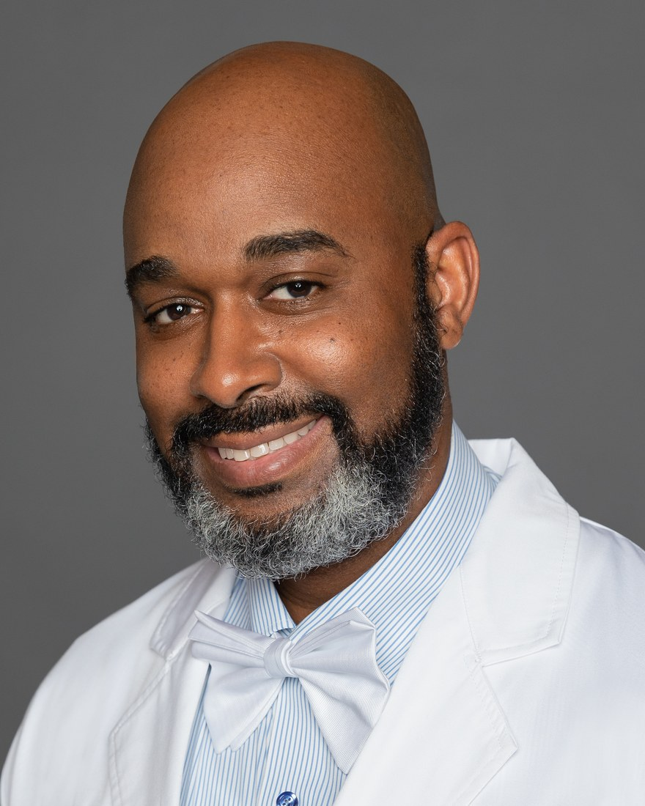

Family Medicine & Primary Care
Full-spectrum care for individuals and families — preventive visits, chronic disease management, and acute concerns, across every stage of life.
Get in touch →I'm Dr. Bryce Meyers — a board-certified family physician in Maryland, U.S. Army veteran, and physician executive with more than two decades leading clinical operations across civilian healthcare, military medicine, and occupational health.

Family medicine at its core — broadened by two decades of military medicine, occupational health, and physician leadership.
Full-spectrum care for individuals and families — preventive visits, chronic disease management, and acute concerns, across every stage of life.
Get in touch →Workplace health, injury care, and exposure medicine — built on a Master of Public Health in Preventive and Occupational Medicine.
Get in touch →Population health, screening, and prevention — translating research and policy into measurable, patient-centered outcomes.
Get in touch →Same-day care for illness and injury, with the procedural depth of a family physician trained in full-spectrum, military-grade medicine.
Get in touch →Physician executive leadership across hospital, ambulatory, and readiness operations — large multidisciplinary teams, quality, and compliance.
Get in touch →Certified on the FMCSA National Registry of Certified Medical Examiners and credentialed as a Certified Medical Review Officer (CMRO).
Get in touch →"Leading healthcare transformation with a focus on leadership."
Dr. Bryce K. Meyers is a board-certified family physician, public health leader, and U.S. Army veteran based in Maryland. He earned his Doctor of Osteopathic Medicine from the New York Institute of Technology College of Osteopathic Medicine (2007) and a Master of Public Health in Preventive and Occupational Medicine from the Uniformed Services University (2010).
He completed family medicine residency at Womack Army Medical Center at Fort Bragg, then served as Chief Medical Officer and brigade surgeon for the 505th Parachute Infantry Regiment, 3rd Brigade Combat Team, 82nd Airborne Division — responsible for the medical readiness of more than 10,000 personnel and deploying to Kandahar, Afghanistan. For that service he was awarded the Bronze Star.
Today he serves as Center Medical Director at Concentra in Columbia, Maryland, leading clinical operations and patient-centered care. He is a Fellow of the American Academy of Family Physicians, holds board certification from the American Board of Family Medicine, and is a preceptor at the Uniformed Services University School of Medicine. His work has appeared in American Family Physician, including the 2019 review "Heat-Related Illnesses."
Physician executives carry responsibility for people, systems, and outcomes. Here's where Dr. Meyers leads.
Board-certified family medicine, delivering full-spectrum care across ages, settings, and acuity levels.
Directed hospital, ambulatory, and medical-readiness operations — large multidisciplinary teams, quality, and regulatory compliance.
MPH-trained in prevention and occupational/environmental medicine — from population health to disaster and aviation medicine.
Preceptor at the Uniformed Services University School of Medicine and published author in American Family Physician.
From osteopathic medical school in New York to brigade surgeon in the 82nd Airborne — and now physician leadership in Maryland.
Leads clinical operations, quality, and patient-centered care at an occupational health center.
Teaches preventive and occupational medicine to the next generation of military physicians.
Recognized as a Fellow of the AAFP for distinguished service and professional achievement.
Chief Medical Officer for more than 10,000 personnel — advising senior leaders on medical readiness, operational medicine, deployment health, and force protection. Deployed to Kandahar Airfield, Afghanistan.
Awarded the Bronze StarTrained in full-spectrum family medicine, from obstetrics and inpatient care to community and preventive health.
Chief medical advisor to command and Task Force Operations Surgeon for the Domestic CBRN Response Force.
Concentration in Preventive and Occupational Medicine.
Osteopathic medical training with a whole-person philosophy of care.
Something else on your mind? Reach out at (410) 381-1330 or use the form below.
Dr. Bryce K. Meyers holds a DO (Doctor of Osteopathic Medicine) from the New York Institute of Technology College of Osteopathic Medicine and an MPH from the Uniformed Services University. He is board-certified by the American Board of Family Medicine and a Fellow of the American Academy of Family Physicians (FAAFP).
Family medicine is his foundation — full-spectrum primary care across every stage of life. His practice also spans occupational and environmental medicine, preventive and public health, urgent care, and physician leadership.
Yes. He is listed on the FMCSA National Registry of Certified Medical Examiners and holds Certified Medical Review Officer (CMRO) credentialing — covering DOT physicals and workplace drug-testing review.
Dr. Meyers served as a brigade surgeon and Chief Medical Officer in the U.S. Army, including the 505th Parachute Infantry Regiment, 3rd Brigade Combat Team, 82nd Airborne Division. He deployed to Kandahar, Afghanistan, and was awarded the Bronze Star.
Yes. He serves as a preceptor at the Uniformed Services University F. Edward Hébert School of Medicine and has published in American Family Physician, including the 2019 review "Heat-Related Illnesses."
He serves as Center Medical Director at Concentra in Columbia, Maryland, and holds active medical licenses in Maryland and Virginia.
For clinical appointments, occupational health services, or professional and speaking enquiries — reach out and a member of his team will follow up.